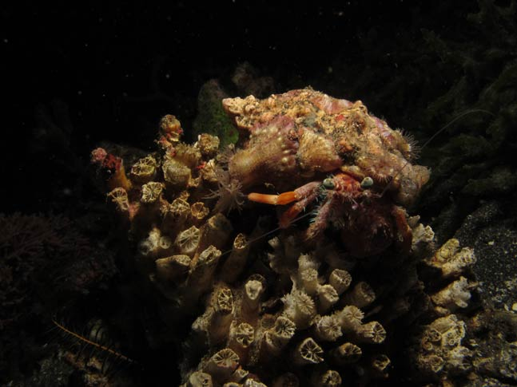

			  
			  
			  
           <DIV align="center"><!-- RRS4 <A href="javascript:Onetransport()"> --> </a></DIV>              </TD>
            </TR>
            <TR>
              <TD bgcolor="#ffffff">
                <DIV align="center">
                  <SELECT name="Oneslide" class="SmallBlack" onChange="Onechange();">
				    <OPTION value="Images/BI_Crustaceans_GROUP_02/37_Hermit_Crab.JPG"  selected>37 Hermit Crab</OPTION>
				 	<OPTION value="Images/BI_Crustaceans_GROUP_02/38_Transparent_Shrimp.jpg">38 Transparent Shrimp</OPTION>
					<OPTION value="Images/BI_Crustaceans_GROUP_02/39_Box_Crab.jpg">39 Box Crab</OPTION>
					<OPTION value="Images/BI_Crustaceans_GROUP_02/40_Crinoid_Shrimp.jpg">40 Crinoid Shrimp</OPTION>
					<OPTION value="Images/BI_Crustaceans_GROUP_02/41_Banded_Coral_Shrimp.jpg">41 Banded Coral Shrimp</OPTION>
					<OPTION value="Images/BI_Crustaceans_GROUP_02/42_Emperor_Shrimp.jpg">42 Emperor Shrimp</OPTION>
					<OPTION value="Images/BI_Crustaceans_GROUP_02/43_Pink_Eared_Mantis.jpg">43 Pink Eared Mantis</OPTION>
					<OPTION value="Images/BI_Crustaceans_GROUP_02/44_Shrimp_And_Pal_Goby.jpg">44 Shrimp and Pal Goby</OPTION>
					<OPTION value="Images/BI_Crustaceans_GROUP_02/45_Shrimp_Scene.jpg">45 Shrimp Scene</OPTION>
					<OPTION value="Images/BI_Crustaceans_GROUP_02/46_Yellow_Lined_Arrow_Crab.jpg">46 Yellow Lined Arrow Crab</OPTION>
					<OPTION value="Images/BI_Crustaceans_GROUP_02/47_Decorator_Crab.jpg">47 Decorator Crab</OPTION>
					<OPTION value="Images/BI_Crustaceans_GROUP_02/48_Night_Shrimp.jpg">48 Night Shrimp</OPTION>
					<OPTION value="Images/BI_Crustaceans_GROUP_02/49_Channel-_Clinging_Crab.jpg">49 Channel Clinging Crab</OPTION>
					<OPTION value="Images/BI_Crustaceans_GROUP_02/50_Whip_Coral_Shrimp.jpg">50 Whip Coral Shrimp</OPTION>
					<OPTION value="Images/BI_Crustaceans_GROUP_02/51_Decorator_Crab.jpg">51 Decorator Crab</OPTION>
					<OPTION value="Images/BI_Crustaceans_GROUP_02/52_Shrimp_In_Sand.jpg">52 Shrimp In Sand</OPTION>
					<OPTION value="Images/BI_Crustaceans_GROUP_02/53_Shrimp_On-Sea_Cucumber.jpg">53 Shrimp on Sea Cucumber</OPTION>
					<OPTION value="Images/BI_Crustaceans_GROUP_02/54_Speckled_Hermit_Crab-a.jpg">54 Speckled Hermit Crab</OPTION>
					<OPTION value="Images/BI_Crustaceans_GROUP_02/55_Neck_Crab.jpg">55 Neck Crabn</OPTION>
					<OPTION value="Images/BI_Crustaceans_GROUP_02/56_Halemeda_Crab.jpg">56 Halemeda Crab</OPTION>
					<OPTION value="Images/BI_Crustaceans_GROUP_02/57_Box_Crab.jpg">57 Box Crab</OPTION>
					<OPTION value="Images/BI_Crustaceans_GROUP_02/58_Hinge_Beak_Cleaner_Shrim.jpg">58 Hinge Beak Cleaner Shrimp</OPTION>
					<OPTION value="Images/BI_Crustaceans_GROUP_02/59_Sculptured_Slipper_Lobst.jpg">59 Sculptured Slipper Lobster</OPTION>
					<OPTION value="Images/BI_Crustaceans_GROUP_02/60_Long_Beak_Cleaner_Shrimp.jpg">60 Long Beak Cleaner Shrimpp</OPTION>
					<OPTION value="Images/BI_Crustaceans_GROUP_02/61_Hairy_Shrimp.jpg">61 Hairy Shrimp</OPTION>
					<OPTION value="Images/BI_Crustaceans_GROUP_02/62_Mysid_Shrimp.jpg">62 Mysid Shrimp</OPTION>
					<OPTION value="Images/BI_Crustaceans_GROUP_02/63_Emperor_Shrimp.jpg">63 Emperor Shrimp</OPTION>
					<OPTION value="Images/BI_Crustaceans_GROUP_02/64_Spotted_Lobster.jpg">64 Spotted Lobster</OPTION>
					<OPTION value="Images/BI_Crustaceans_GROUP_02/65_Porcelain_Crab_Feeding.jpg">65 Porcelain Crab Feeding</OPTION>
					<OPTION value="Images/BI_Crustaceans_GROUP_02/66_Slipper_Lobster-3364.jpg">66 Slipper Lobster</OPTION>
					<OPTION value="Images/BI_Crustaceans_GROUP_02/67_Crab.jpg">67 Crab</OPTION>
					<OPTION value="Images/BI_Crustaceans_GROUP_02/68_Harlequin_Shrimp.jpg">68 Harlequin Shrimp</OPTION>
					<OPTION value="Images/BI_Crustaceans_GROUP_02/69_Orangutan_Crab.jpg">69 Orangutan Crab</OPTION>
					<OPTION value="Images/BI_Crustaceans_GROUP_02/70_Siagiani_Squat_Lobster 2a.jpg">70 Siagiani Squat Lobster</OPTION>
					<OPTION value="Images/BI_Crustaceans_GROUP_02/71_Hermit_Crab.jpg">71 Hermit Crab</OPTION>
					</SELECT>